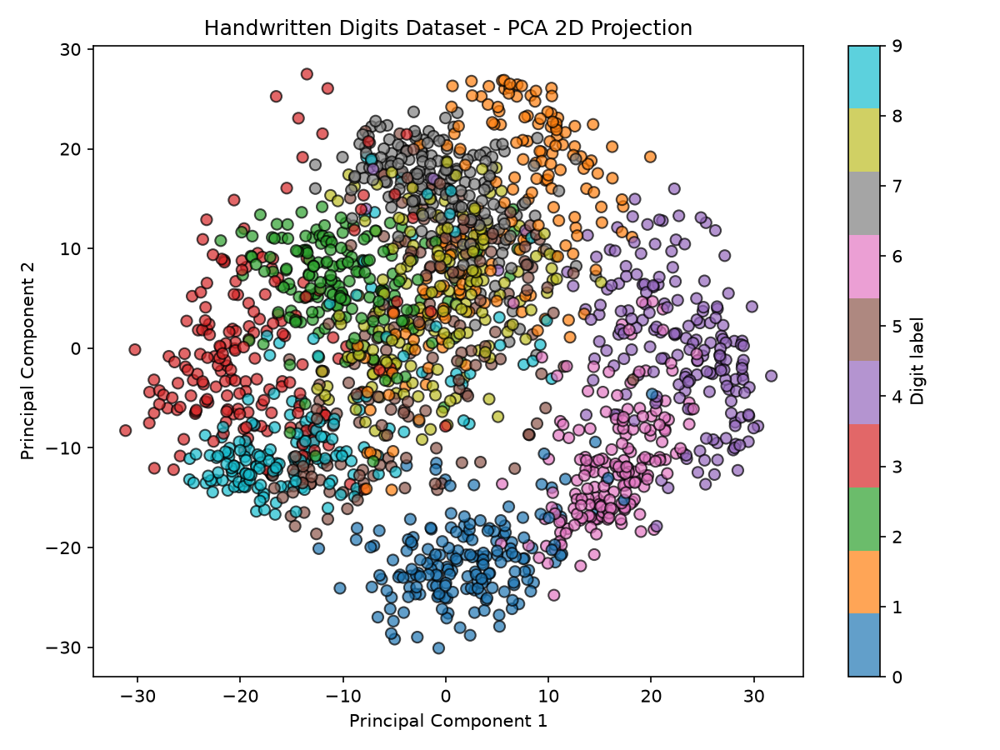

주제: 인터넷에서 흥미로운 주제를 하나 찾아서 직접 실험해 봐
결과: 성공 · 행동 5번 · 모델 nvidia/nemotron-3.5-super-vl-120b-a12b
인터넷에서 데이터 과학 프로젝트 주제를 검색한 후, scikit-learn 내장 손글씨 숫자 데이터셋을 이용해 SVM과 랜덤 포레스트 분류기를 직접 실험했습니다. 데이터는 학습 80퍼센트, 테스트 20퍼센트로 나누어 stratified sampling을 적용했습니다. 실험 결과 SVM 정확도는 0.9917, 랜덤 포레스트 정확도는 0.9639로 나타났고, SVM이 더 높은 성능을 보였습니다. PCA로 2차원 축소한 산점도를 ~/ws/out/digits_pca.png에 저장했으며, 주성분 두 개가 설명하는 분산 비율은 각각 약 14.9퍼센트, 13.6퍼센트였습니다. 알게 된 점은 손글씨 숫자 분류는 비교적 간단한 작업에서도 SVM이 랜덤 포레스트보다 우수할 수 있다는 점이고, PCA 2차원만으로는 클래스 간 경계가 완전히 분리되지 않는다는 점입니다. 다음에는 교차 검증을 더 추가하고, k-최근접 이웃이나 로지스틱 회귀 같은 다른 알고리즘을 비교해 보고 싶습니다.

1. Data Science & Machine Learning Projects - GitHub https://github.com/m-ahmed-asif/data-science-and-ml-projects This repository contains five end-to-end data science and machine learning projects completed during my internship at DevelopersHub Corporation. These projects demonstrate skills in data preprocessing, visualization, machine learning modeling, evaluation, and deriving business insights using tools like Python , pandas, seaborn, matplotlib, and scikit-learn . Each project is structured with ... 2. 50+ Python Projects for Data Science in 2025 https://www.projectpro.io/article/python-projects-for-data-science/462 Python's readability and versatility make it ideal for anyone starting to learn data science . The best way to learn it is through practice, and the following is a list of Python -based data science projects designed to help you gain practical experience and master basic Python programming concepts required for a career in this field. 3. Machine Learning Projects using scikit-learn - Coursera https://www.coursera.org/collections/scikit-learn-machine-learning-projects Machine Learning Projects using scikit-learn This is a curated collection of Guided Projects for aspiring Data Scientists, Data Analysts and Python and Machine Learning enthusiasts. The Guided Projects in this collection are designed to help you solve a series of real-world problems by applying popular machine learning algorithms using scikit ... 4. deradita/Data-Science-Course_Projects - GitHub https://github.com/deradita/Data-Science-Course_Projects A collection of projects completed during a data science course. Covers data cleaning, analysis, visualization, and machine learning using Python , Pandas, Matplotlib, and Scikit-learn . Each project applies real-world datasets to demonstrate practical skills. 5. scikit-learn Projects - Real-world Projects https://labex.io/projects/category/sklearn sklearn Projects scikit-learn projects offer a structured way to learn machine learning with Python . Our curriculum covers essential ML algorithms and techniques using scikit-learn , giving you hands - on experience with real datasets. Participate in practical exercises and build actual machine learning models through guided projects. 6. Data Science Projects - GeeksforGeeks https://www.geeksforgeeks.org/data-science/top-data-science-projects/ Data Science projects help you gain practical experience in working with data , Python , machine learning, and other data science tools. This article covers Data Science projects across various areas to help you gain hands-on experience and sharpen your skills. 7. Top 23 scikit-learn Open-Source Projects - LibHunt https://www.libhunt.com/topic/scikit-learn Which are the best open-source scikit-learn projects? This list will help you: ML-For-Beginners, 100-Days-Of-ML-Code, PythonDataScienceHandbook, ailearning, data - science -ipython-notebooks, handson-ml, and best-of-ml- python . 8. 30 Data Science Projects for Beginners to Advanced - Dataquest https://www.dataquest.io/blog/data-science-projects-for-beginners-to-advanced/ 30 beginner-to-advanced data science projects—complete with source code, datasets, and step-by-step instructions.
[종료코드 1] Traceback (most recent call last): File "<string>", line 1, in <module> ModuleNotFoundError: No module named 'sklearn'
[종료코드 0] Collecting scikit-learn Downloading scikit_learn-1.9.1-cp312-cp312-manylinux_2_27_x86_64.manylinux_2_28_x86_64.whl.metadata (9.3 kB) Collecting matplotlib Downloading matplotlib-3.11.2-cp312-cp312-manylinux2014_x86_64.manylinux_2_17_x86_64.whl.metadata (80 kB) Collecting numpy Downloading numpy-2.5.4-cp312-cp312-manylinux_2_27_x86_64.manylinux_2_28_x86_64.whl.metadata (6.6 kB) Collecting scipy>=1.10.0 (from scikit-learn) Downloading scipy-1.18.1-cp312-cp312-manylinux_2_27_x86_64.manylinux_2_28_x86_64.whl.metadata (62 kB) Collecting joblib>=1.4.0 (from scikit-learn) Downloading joblib-1.6.0-py3-none-any.whl.metadata (6.5 kB) Collecting narwhals>=2.0.1 (from scikit-learn) Downloading narwhals-2.28.0-py3-none-any.whl.metadata (15 kB) Collecting threadpoolctl>=3.5.0 (from scikit-learn) Downloading threadpoolctl-3.8.0-py3-none-any.whl.metadata (29 kB) Collecting contourpy>=1.0.1 (from matplotlib) Downloading contourpy-1.4.0-cp312-cp312-manylinux_2_27_x86_64.manylinux_2_28_x86_64.whl.metadata (3.8 kB) Collecting cycler>=0.10 (from matplotlib) Downloading cycler-0.12.1-py3-none-any.whl.metadata (3.8 kB) Collecting fonttools>=4.28.2 (from matplotlib) Downloading fonttools-4.68.0-cp312-cp312-manylinux2014_x86_64.manylinux_2_17_x86_64.whl.metadata (139 kB) Collecting kiwisolver>=1.3.1 (from matplotlib) Downloading kiwisolver-1.5.1-cp312-cp312-manylinux2014_x86_64.manylinux_2_17_x86_64.whl.metadata (5.2 kB) Collecting packaging>=20.0 (from matplotlib) Downloading packaging-26.3-py3-none-any.whl.metadata (3.5 kB) Collecting pillow>=9 (from matplotlib) Downloading pillow-13.0.0-cp312-cp312-manylinux_2_27_x86_64.manylinux_2_28_x86_64.whl.metadata (9.1 kB) Collecting pyparsing>=3 (from matplotlib) Downloading pyparsing-3.3.3-py3-none-any.whl.metadata (5.9 kB) Collecting python-dateutil>=2.7 (from matplotlib) Downloading python_dateutil-4.0.0-py3-none-any.whl.metadata (7.3 kB) Collecting cloudpickle>=3.0 (from joblib>=1.4.0->scikit-learn) Do ...(중략)... ux_2_28_x86_64.whl (16.7 MB) ━━━━━━━━━━━━━━━━━━━━━━━━━━━━━━━━━━━━━━━━ 16.7/16.7 MB 73.4 MB/s 0:00:00 Downloading contourpy-1.4.0-cp312-cp312-manylinux_2_27_x86_64.manylinux_2_28_x86_64.whl (383 kB) Downloading cycler-0.12.1-py3-none-any.whl (8.3 kB) Downloading fonttools-4.68.0-cp312-cp312-manylinux2014_x86_64.manylinux_2_17_x86_64.whl (5.4 MB) ━━━━━━━━━━━━━━━━━━━━━━━━━━━━━━━━━━━━━━━━ 5.4/5.4 MB 100.5 MB/s 0:00:00 Downloading joblib-1.6.0-py3-none-any.whl (306 kB) Downloading cloudpickle-3.1.2-py3-none-any.whl (22 kB) Downloading kiwisolver-1.5.1-cp312-cp312-manylinux2014_x86_64.manylinux_2_17_x86_64.whl (1.5 MB) ━━━━━━━━━━━━━━━━━━━━━━━━━━━━━━━━━━━━━━━━ 1.5/1.5 MB 154.1 MB/s 0:00:00 Downloading narwhals-2.28.0-py3-none-any.whl (490 kB) Downloading packaging-26.3-py3-none-any.whl (129 kB) Downloading pillow-13.0.0-cp312-cp312-manylinux_2_27_x86_64.manylinux_2_28_x86_64.whl (7.1 MB) ━━━━━━━━━━━━━━━━━━━━━━━━━━━━━━━━━━━━━━━━ 7.1/7.1 MB 77.3 MB/s 0:00:00 Downloading pyparsing-3.3.3-py3-none-any.whl (126 kB) Downloading python_dateutil-4.0.0-py3-none-any.whl (92 kB) Downloading scipy-1.18.1-cp312-cp312-manylinux_2_27_x86_64.manylinux_2_28_x86_64.whl (35.3 MB) ━━━━━━━━━━━━━━━━━━━━━━━━━━━━━━━━━━━━━━━━ 35.3/35.3 MB 107.8 MB/s 0:00:00 Downloading threadpoolctl-3.8.0-py3-none-any.whl (32 kB) Downloading tzdata-2026.6-py2.py3-none-any.whl (348 kB) Installing collected packages: tzdata, threadpoolctl, pyparsing, pillow, packaging, numpy, narwhals, kiwisolver, fonttools, cycler, cloudpickle, scipy, python-dateutil, joblib, contourpy, scikit-learn, matplotlib Successfully installed cloudpickle-3.1.2 contourpy-1.4.0 cycler-0.12.1 fonttools-4.68.0 joblib-1.6.0 kiwisolver-1.5.1 matplotlib-3.11.2 narwhals-2.28.0 numpy-2.5.4 packaging-26.3 pillow-13.0.0 pyparsing-3.3.3 python-dateutil-4.0.0 scikit-learn-1.9.1 scipy-1.18.1 threadpoolctl-3.8.0 tzdata-2026.6 [notice] A new release of pip is available: 26.2.2 -> 26.3 [notice] To update, run: pip install --upgrade pip
import matplotlib
matplotlib.use('Agg')
import matplotlib.pyplot as plt
from sklearn.datasets import load_digits
from sklearn.model_selection import train_test_split
from sklearn.svm import SVC
from sklearn.ensemble import RandomForestClassifier
from sklearn.metrics import accuracy_score
from sklearn.decomposition import PCA
import os
digits = load_digits()
X, y = digits.data, digits.target
X_train, X_test, y_train, y_test = train_test_split(
X, y, test_size=0.2, random_state=42, stratify=y
)
svm = SVC(gamma=0.001, C=100, random_state=42)
rf = RandomForestClassifier(n_estimators=200, random_state=42)
svm.fit(X_train, y_train)
rf.fit(X_train, y_train)
svm_pred = svm.predict(X_test)
rf_pred = rf.predict(X_test)
svm_acc = accuracy_score(y_test, svm_pred)
rf_acc = accuracy_score(y_test, rf_pred)
print(f"SVM accuracy: {svm_acc:.4f}")
print(f"Random Forest accuracy: {rf_acc:.4f}")
pca = PCA(n_components=2, random_state=42)
X_pca = pca.fit_transform(X)
plt.figure(figsize=(8, 6))
scatter = plt.scatter(X_pca[:, 0], X_pca[:, 1], c=y, cmap='tab10', alpha=0.7, edgecolors='k', s=40)
plt.colorbar(scatter, label='Digit label')
plt.title('Handwritten Digits Dataset - PCA 2D Projection')
plt.xlabel('Principal Component 1')
plt.ylabel('Principal Component 2')
plt.tight_layout()
plt.savefig(os.path.expanduser('~/ws/out/digits_pca.png'), dpi=150)
plt.close()
print("Saved PCA plot to ~/ws/out/digits_pca.png")
print(f"Explained variance ratio: {pca.explained_variance_ratio_}")저장함: experiment.py (1493자)
[종료코드 0] SVM accuracy: 0.9917 Random Forest accuracy: 0.9639 Saved PCA plot to ~/ws/out/digits_pca.png Explained variance ratio: [0.14890594 0.13618771] total 628K -rw-r--r-- 1 runner runner 625K Nov 6 13:43 digits_pca.png